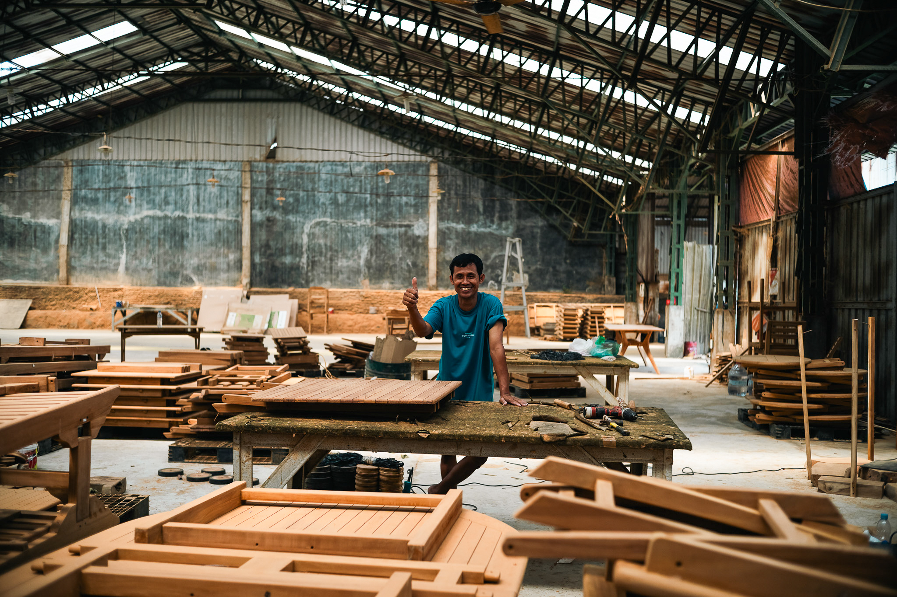
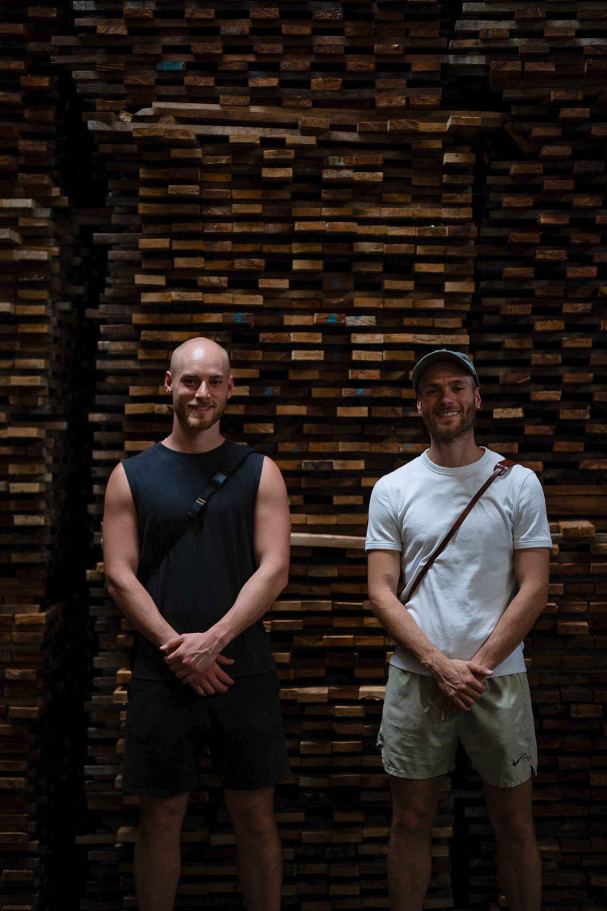

From raw timber to finished craft.
Indonesia is where our relationship with wood comes to life. The country is home to some of the world's most skilled timber craftspeople — men and women who have spent their lives learning to read the grain, feel the weight, and understand the soul of each species.
Our workshops in Indonesia produce the flooring, furniture, and structural elements that define a NOE Builders space. Everything is made by hand, using traditional techniques refined over generations, with timber selected for its beauty and durability.

Indonesia · Craftsman
Indonesia · Timber warehouse Indonesia · Workshop
Indonesia · Workshop
Skilled hands. Extraordinary results.
The workshops we partner with in Indonesia are not factories. They are ateliers — places where each piece of timber is handled individually, where the craftsperson knows the species they are working with and respects its character.
The result is furniture and flooring that cannot be replicated by a machine. You can see it in the grain, feel it in the finish, and sense it in the weight of the final piece. This is what it means to build with natural materials — to honour the tree that gave its life to become something beautiful and enduring.